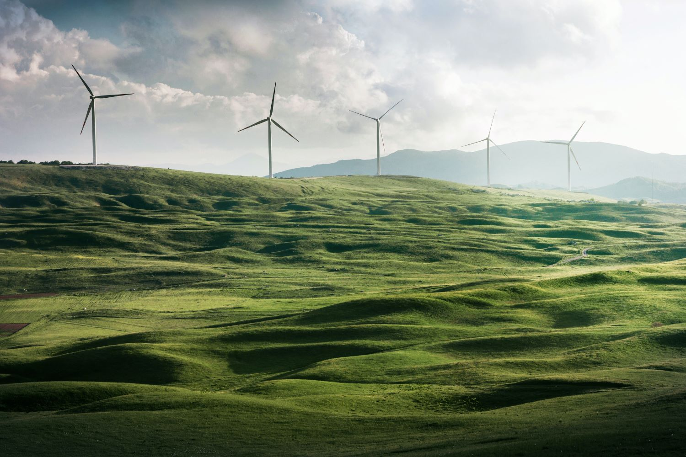

Can the earth still be good enough?
Have you ever wondered why all of a sudden the weather condition of a place changes,warmer temperatures,changes in the patterns and amount of rainfall, food shortages,increase in extreme weather events,such as heat-waves,droughts,and floods and not to forget,earthquakes and deadly hurricanes andn all other deadly conditions which poses deadly threats to humanity. this are challenges humans experience on dialy bases.
It's the effect of climate change. The rapid change of the climatic condition is so fatal that it damages our home 'The earth.' this climatic changes are responsible for, shifting wildlife populations and habitats,rising seas,poor food production. All of these changes are emerging as humans continue to add heat trapping greenhouse gases to the atmosphere.
unsplash/shivam-kumar
- Average precipitation (rain and snow) has increased across the globe.yet some regions are experiencing more severe droughts,increasing the risk of wildfires like the one that took the amazon forests.and drinking water shortages.
- while species like the polar bears are finding it difficult to survive dew to rising temperatures.some species-including ticks ,mosquitoes and crop pests are thriving.
- booming parasites populations are huge problems for species like moose because tens of thousands of these parasites can gather on a single moose to feed on it's blood--weaking the animals immune system and often ending in death.
- Rising temperatures are affecting wildlife and their habitats.Vanishing ice has challenged species such as the adelie pengiun in antarctica, where some populations on the western peninsula have collapsed by 90 percent or more.
What's the cause
unplash/patrick-hendry
Climate change is a problem that is rooted in human activity, Greenhouse gases are gases in the atmosphere that allow sunlight to pass through and reach the earth's surface. Some of this sunlight is captured as heat on Earth, and some of it is radiated back towards space. When greenhouse gases are present in the right amounts, they trap just enough heat to keep the earth warm enough for organisms to survive, while letting some of that heat back into space.
This is very much like cracking the windows in your car while it sits in the sun. If you left the windows closed, the car would be way too hot when you got back, so you open the windows just enough to let some of that heat escape. Without greenhouse gases the temperature on Earth would be wellbelow freezing. This trapping of heat under the atmosphere is called the greenhouse effect, and it is both naturaland beneficial to life on Earth.
So, if greenhouse gases are so good for us, why do they get such a bad reputation? The problem with greenhouse gases is that they need to be present in specific amounts. When too little gas is present, not enough heat is trapped under the atmosphere to keep the earth warm. When too much gas is present, too much heat gets trapped, which warms the earth more than usual. The types and amounts of greenhouse gases in the atmosphere are only beneficial when they are present in just the right balance. You now know that the greenhouse effect is both natural and necessary for our survival because it keeps Earth warm and hospitable.
However, the rapid increase in greenhouse gas concentrations in the atmosphere has led to the enhanced greenhouse effect, which is when too much heat is trapped on Earth, resulting in an overall increase in global temperatures.
How can you and i help?
unsplash/noah-buscher
It's true that the government of many countries are working together with organizations such as 'WHO' To make the world a better place, But as united nations secretary-general Antonio Guterres said at the recent "UN Climate Change Conference of the parties(COP26), "Our fragile planet is hanging by a thread. At this point we are knocking on the door of climate catastrophe. it is time to go into emergency mode --else the chance of reaching net-Zero will itself be Zero".
The Outlook can seem scary and depressing.But the good news is that there is a lot we can still do as individuals to change this narrative.The climate emergency demands action from all of us."we as individuals, must change our consumption habits and pressure to move rapidly to a Low-carbon World."
Here are 5 ways you can be part of the climate solution:
1:Sustainable Fashion
unsplash/priscilla-du-preez
The fashion Industry is responsible for up to 8-10 per cent of the earths global carbon emission - more than international flights and shipping industries combined. and 'fast fashion' has embraced a disposing culture that sees clothes quickly end up in landfills.But we can change this. buy fewer new cloths and wear them for longer period of time. Try to buy brands that supports sustainability. and try to avoid buying cloths that you'd wear only once. Recycle pre-loved cloths and repair when necessary.
2:Eatings habits
unsplash/femoree
When you eat good food not only will your body thank you the planet will also thank you.Today,aroud 60 per cent of the world's agricultural land is used for livestock grazing and people around the world are consuming more food gotten from animals than is healthy. diets rich in plants can help reduce chronic illness,such as stroke,diabetes,cancer and heart disease.
3:Plant Trees
unsplash/johua-woroniecki
Trees are so so important because trees are the ultimate carbon storage machines.Like plants,they take carbon-dioxide from the atmosphere for their own energy and growth. using a process called photosynthesis . they produce oxygen which we breath as a byproduct of this process. Forests and trees can store carbon for centuries which the planet desperatly need them for,given the damages done to the atmosphere by carbon emitting human activities.But every year approximately 12 million hectares of forests are destroyed,this is responsible for roughly 25per cent of global greenhouse gas emissions.We can all play a part in turning this trend around by planting trees,either individually or as part of a collective.
4:Use Renewable Energy
unsplash/appolinary-kalashnikova
A large chunk of greenhouse gases that blanket the earth and trap the suns heat are generated through energy production,by burning fossil fuels to generate heat and electricity,If possible,switch to a Zero-carbon or renewable energy provider. Install solar panels in your home. be more efficient and try to turn your carbon usage down. To avoid the worst impacts of climate change,emissions need to be reduced by almost half by 2030 and reach net-zero by 2050.To achieve this, we need to end our reliance on fossil fuels and invest in alternative sources of energy that are Sustainable,accessible,affordable and reliable. Renewable energy sources provided by SUN,WIND,WATER,HEAT FROM THE EARTH and even WASTE are available in abundance around us.
5:Conserve your transport
unsplash/jd-weiher
We need to try to get the least possible amount of cars on the road. Because transport accounts for at least a quarter of all the greenhouse gas emissions around the world,many governments are implementing policies to decarbonize travel.If you can leave your car at home and walk or use a bycycle whenever possible. electric cars are much better options in this situation.
Whether you are a trader in from Nigeria or homeowner in spain,climate change will have an impact on your life.but the opposite is also true: your actions will influence the planet for the coming decades-for better or worse.